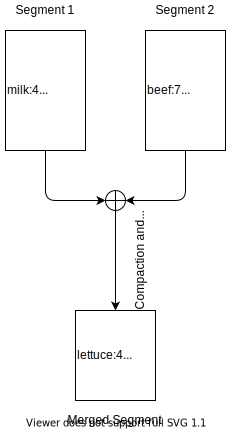

“Please design a key-value storage engine”. You might hear this during a system design interview. While this question in fact is pretty, designing a storage engine is not easy. In this post, I want to start with some simple designs and principles and gradually approach a solution of a relatively complete key-value storage engine.
Please note that, though we mainly talk about key-value storage, many ideas and principles are widely used in many other database designs.
Key-Value in Memory
Have you ever encountered any key-value storages in memory? Sure. HashMap and TreeMap in Java are two data structures for key-value storages only in memory. There are also a lot of other data structures to implement a in-memory key-value storage, such as AVL tree, skip list, etc.
How About Data on Disk?
Here is a question: since we already some in-memory data structures for key-value storages, can we also use it for storage on disk?
HashMap + Append-only Log
Let’s take the HashMap as one example. HashMap uses hash value of the key to index the data. Assume we are always appending data to a file on the disk, what we can do here is to maintain a in-memory hash map where every key is mapped to a byte offset in the data file, which is the location at which the value can be found. Whenever you append a new key-value pair to the file, you also update the hash map by adding or updating the offset.
1 | key offset |
Though this method is pretty simple, some of its ideas are still pretty impressive, one of which is using append-only log to improve write.
Compared with in-memory key-value storage, the most important feature of an actual data storage is: it needs to be persistent. This is why we need to always write to the disk. For writes, it’s hard to beat the performance of simply appending to a file, as this is the simplest possible write operation. What is counterintuitive is, random write to memory is even slower than sequential read to disk, not to mention random write to disk. So, if you need to write to the disk with high performance, always use append-only write.
However, in terms of scalability, it is not hard to spot some downsides of this method:
- Append-only operation will grow the data size forever, so it is possible run out of the disk space, right?
- If the number of keys of the hash map keeps growing, the data structure may not fit in the memory one day.
Another downside of this approach is on range query. As the key is usually unordered, performance of range query might be pretty bad.
Compaction & Merging
How do we avoid eventually running out of disk space? A good solution is to break the log into segments of a certain size: if the log size reaches a limit, we close the current file (a segment) and all subsequent writes will go to a new file (a new segment). What we can do next is to perform compaction on these segment, which normally removes duplicate keys in the log and only keeps the most recent update for the key. As the size of a segment will be smaller after compaction, what we usually do is to also merge several segments at the same time as performing the compaction.
As shown in the picture above, segment 2 is newer than segment 1, so in the merging process, the data in segment 2 might also overwrite data in segment 1 (e.g., key “beef”).
For each of the segment, it may have its own in-memory hash map, mapping the keys to file offsets. If we want to look up a key, we can start with the most recent segment and its hash map; if the key is not present, we then check the second-most-recent, and so on. For write, we always write to the most recent segment and update its hash map.
To make this idea work in practice, some design details are also important in an actual implementation. For example:
What is the file format for the log?
Many formats are candidates, but probably it is better just to use a binary format, e.g., one encoding the length of a string in bytes, followed by the raw string. This format will remove all whitespaces.
How can we delete a key/record?
Similar to a simple write operation, when deleting a key, we may just need to append a special deletion record to the data file (usually called tombstone). In compaction and merging, all previous values of the deleted key before the tombstone should be discarded.
What if crash happens or the machine is restarted, all in-memory hash maps (indices) will be lost. How can we recover them?
We can also reconstruct the in-memory hash maps with the in-disk data, but it might take a long time if the segment files are large. A better method might be storing a snapshot of each segment’s hash map on disk. This may speed up recovery.
We still have a lot of designs or features to talk about (e.g., concurrency control) but will stop here. Coming back to the design itself, we still left some problem unsolved: the hash tables must fit in memory and it will be a problem if the has maps are large. Also, range querying have low efficiency.
SSTables and LSM-Tree
In this chapter, we will discuss some ideas brought by LevelDB, an open-source database engine by Google. The basic idea is still to use append-log segment files (we will call them log structured storage segment from now) and to construct an in-memory index, but we have many other actions to resolve the scalability and range query issues.
Let’s start with a simple change to the format of our segment files: we require that the sequence of key-value pairs is sorted by key. Wait, won’t it break our ability to use sequential writes? No worry, let’s get to that in a moment.
This kind of format is simple called Sorted String Table, or just SSTable. Another requirement we want to put here is: in each segment file, one key will only appear once. The compaction and merging (or say, compression) process already ensures that. You might some exceptions in some cases (such as in LevelDB) but let’s assume it is always true now.
There are several benefits of doing this:
- While range query becomes more possible, merging segment is also simple and efficient. The approach is really similar to the one used in the merge sort algorithm. If we find a key exists in multiple segments during merging, we should always keep the key-value pair from the most recent segment and abandon those from older segments.
- As keys are sorted, you don’t need to keep an index of all keys in memory. Instead, a sparse index could be used. For example, if you want to look up the key
bike, you probably cannot determine the offset of this key just by looking up the hash map below, but you do know the key is betweenbeeandbored(by a simple binary search), so you can jump to the offset forbeeand scan from there until you find the key (you might not find it, and it is easy to know).
1 | key byte offset |
With this assumption, let’s consider how can we maintain SSTables while writes can occur in any order.
As we know, maintaining a sorted structure on disk is hard (though it is still possible, such as B-Tree), but it is easy to do it in memory (we already discussed this), such as AVL tree and read-black tree. We can do the following (also see the picture below):
- When a write comes in, add it to the in-memory sorted hash map. This hash map is called memtable.
- The memtable might grow larger gradually. When the size of the hash map reaches a limit, it will become an immutable memtable. While we can create a new empty memtable for new incoming writes, we will also write out the immutable memtable to disk as an SSTable file. This is easy, as the in-memory data structure already maintains the order of all keys. The new SSTable will become the most recent SSTable.
- For read requests, we will first find it in the memtable (this could be pretty fast). If not present, we start with the most recent SST file, and the second-most-recent SST file, and so on. Each SST file could have a in-memory index in memory to help up find a key, but we also have other better ways to help look-up (will talk about it later).
We also need to compress SSTable files regularly. In Google’s LevelDB, it uses a level-structured architecture to manage all SSTable files. By saying that, when writing the immutable memtable to the disk, we will write it to level 0 (or called young level). On young level, SST files may contain overlapping keys (as they are directly from memtable), but we make sure on level 1 and higher, SST files on each level have distinct non-overlapping key ranges. This is achieved by the compaction process described below:
When the size of level L exceeds its limit, we compact it in a background thread. The compaction picks a file from level L and all overlapping files from the next level L+1. Note that if a level-L file overlaps only part of a level-(L+1) file, the entire file at level-(L+1) is used as an input to the compaction and will be discarded after the compaction. Aside: because level-0 is special (files in it may overlap each other), we treat compactions from level-0 to level-1 specially: a level-0 compaction may pick more than one level-0 file in case some of these files overlap each other.
A compaction merges the contents of the picked files to produce a sequence of level-(L+1) files. We switch to producing a new level-(L+1) file after the current output file has reached the target file size (2MB). We also switch to a new output file when the key range of the current output file has grown enough to overlap more than ten level-(L+2) files. This last rule ensures that a later compaction of a level-(L+1) file will not pick up too much data from level-(L+2).
The old files are discarded and the new files are added to the serving state.
Compactions for a particular level rotate through the key space. In more detail, for each level L, we remember the ending key of the last compaction at level L. The next compaction for level L will pick the first file that starts after this key (wrapping around to the beginning of the key space if there is no such file).
Compactions drop overwritten values. They also drop deletion markers if there are no higher numbered levels that contain a file whose range overlaps the current key.
You may also notice that, what if the machine crashes and all in-memory data gets lost? In this case, we will use write-ahead-log (WAL) to protect the data. We will append a log to the log file on disk before we make any updates to the memtable. Thus, even the machine crashes unexpectedly, we can still recover the memtable with the log file. The log file is also an append-only file so writing to it could be fast. Please note that, when we write the memtable into a SSTable file on disk, the corresponding log file will also be discarded. A new log file will be initialized along with the new memtable.
This algorithm and some similar storage engines are used in Cassandra and HBase, both of which were inspired by Google’s Bigtable paper (this paper introduces the idea of memtable and SSTable). The indexing structure is also called Log-Structured Merge-Tree (or just LSM-Tree). Storage engines that are based on this principle of merging and compacting sorted files are often called LSM storage engines.
Other Design Details
Coming back to LevelDB, there are many other design details we need to have a look, as it also affects the performance of the database system.
Manifest file
For all SSTable files, there is a manifest file that lists the set of sorted SSTables on each level. It records some important metadata of each SSTable, such as the file’s name and the key range.
Manifest fils might be useful when we look up a key among all SSTable files. When a key is not present in the memtable and we need to find it in SSTable files, manifest file can improve this process:
- Manifest file might contain the key range of each SSTable. If the key is not within that range, we can quickly know that we can skip this SSTable file and go ahead with the next one.
- Starting from level 1, all SSTables on a single level will not have overlapping key range. Thus, there will only be one SSTable file that might have the key. A simple binary search might determine which SSTable we should look into for this key.
Bloom filter
It is apparent that the write performance is good in LevelDB, thanks to the LSM-tree, but read performance might be bad, as we might need to check more than one SSTable to find a key’s value. Bloom filter is a way to improve read operations.
A bloom filter is a memory-efficient data structure for approximately the contents of a set. Basically,
- if it says “the key doesn’t exist”, then they key must not exist in the database;
- if it says “the key exists”, then the key may exist in the database, and we need to go to the memtable or SSTables to find out the truth.
In fact, the implementation of a bloom filter could be really easy. Another similar data structure is count-min sketch, though they are suitable in different use cases (we will not dive deep here). The most important benefit of a bloom filter is, if a key does not exist, it can avoid all unnecessary lookups and return the result immediately.
Other improvements
There are some other ways to improve the performance:
- cache. It’s possible to cache some SSTables in memory;
- Sparse index or full index of each SSTables can be stored in the memory for fast lookup.
B-tree
(TODO)